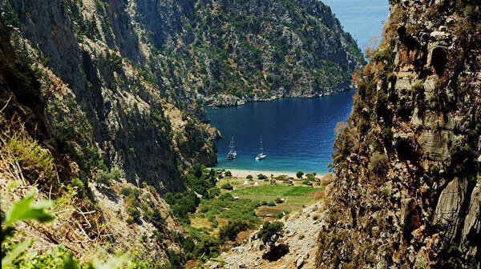
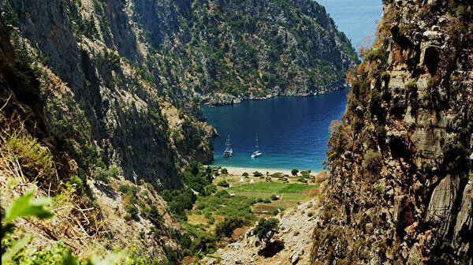

Tarihi
Kelebek Vadisi'nin geçmişi MÖ IV. yüzyıla kadar uzanır. Likya'nın "Perdicia" isimli yerleşim yerinin bazı kalıntıları Kelebek Vadisi Kanyonu'nun hemen üstünde yer alır. Buradaki köy "Faralya" ismiyle anılmaktadır.
Nasıl Gidebilirsiniz
Kelebekler Vadisi'ne ulaşım sağlamanın kolay yollarından biri, Ölüdeniz'den gelen teknelerden birine binmek veya tekne kiralamaktır. Kelebekler Vadisi'ne ulaşım sağlamanın bir diğer yolları ise Kabak Koyu'ndan günübirlik olarak kalkan tekneleri tercih etmek veya yürüyüş patikasından gitmektir.
Yer :
Fethiye/Muğla
Rakım
Kelebekler Vadisi'nin denizden yüksekliği 330 metredir.
Kelebekler Vadisi ile ilgili resimler
 
